道這家老牛皮牛肉麵很久了，之前都是去旁邊的十一街吃牛肉麵， 對這家因豆花而有名的牛肉麵店實在提不起興趣~ 不過~十一街吃久了還是會想換別家吃~ 所以就在去年底造訪了老牛皮.. 沒想到現在去老牛皮的次數比十一街還多...:p
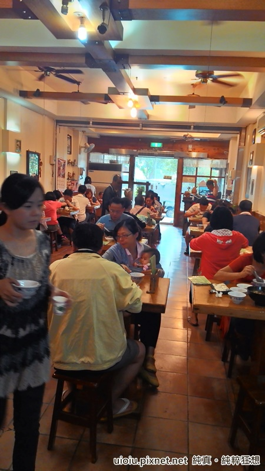老牛皮用餐時間人潮滿滿，連二樓也常客滿，不過翻桌率很快，等一下子就有位子了！
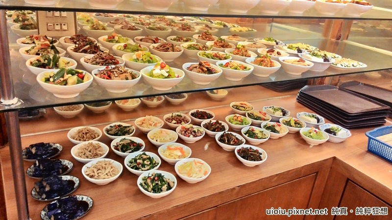小菜一盤40元，我是覺得有點貴， 小黃瓜一盤40元，肉一盤也40元... 這標準就自己拿捏吧~
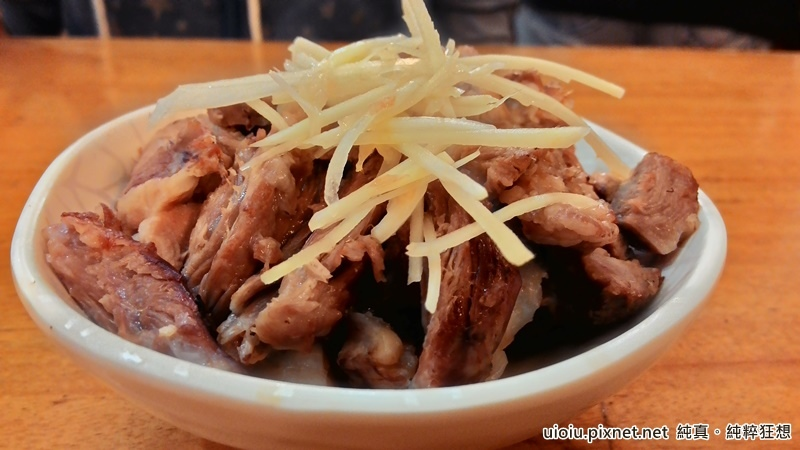拿肉類小菜感覺比較划算~
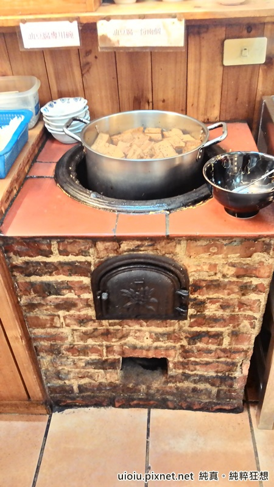 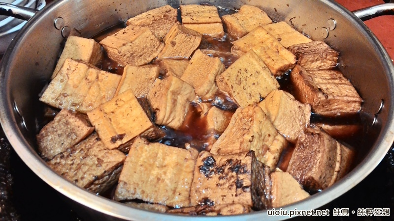油豆腐我覺得不錯， 這是自助式，二塊油豆腐35元
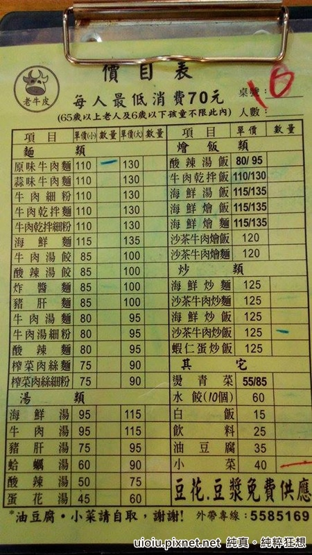以牛肉麵的價格來說不算貴，水餃一顆六元也OK， 但炒飯真的不便宜，重點是很普通，點過一次就不會再點了~
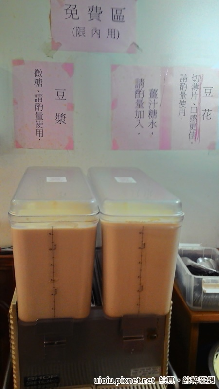點完菜的重頭戲就是這個~~ 喝到飽的豆漿，
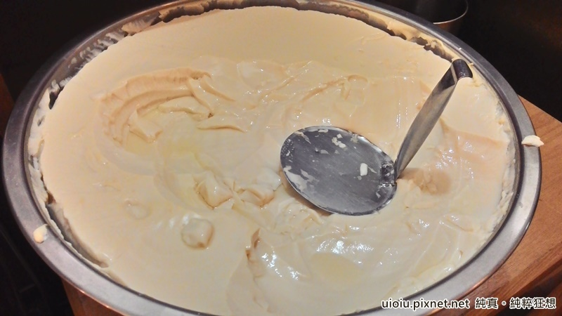跟吃到飽的豆花~~
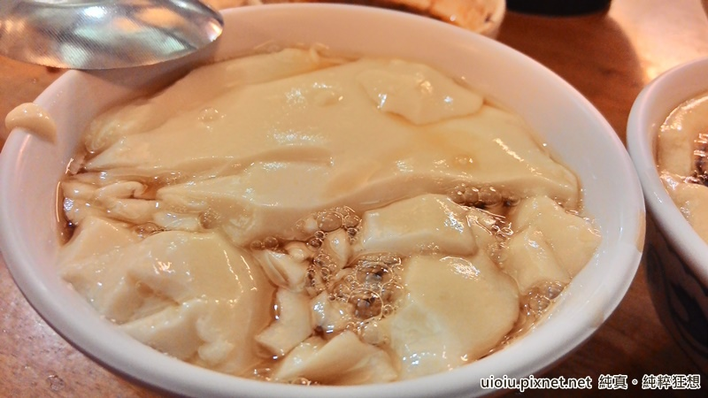豆花的口感真的沒話說，我覺得比一般豆花店賣的還綿密， 很難想像這一大鍋都是免費提供的呀！
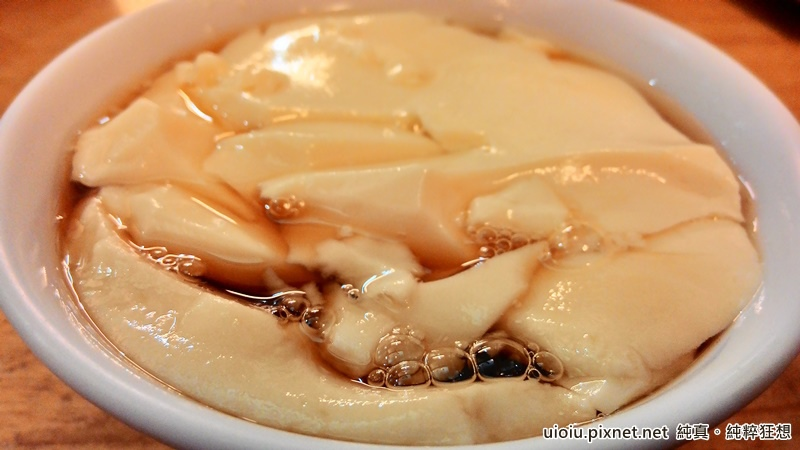難怪很多人會為了豆花而來吃牛肉麵~ 不過糖水真的很~~甜，連愛吃甜的我都受不了~ 我會加豆漿調和， 甜甜的黑糖豆奶佐豆花~味道很不錯哦！
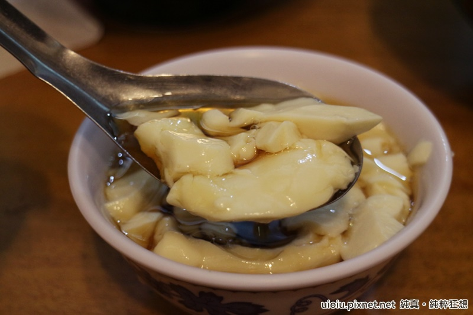每次來都要吃個二三碗豆花...
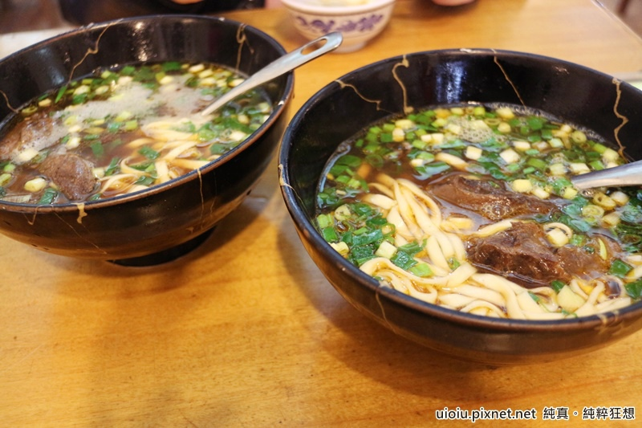 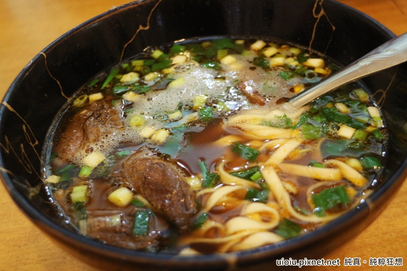比起原味，我覺得蒜味牛肉麵的湯頭我比較喜歡， 但味道因人而異啦！
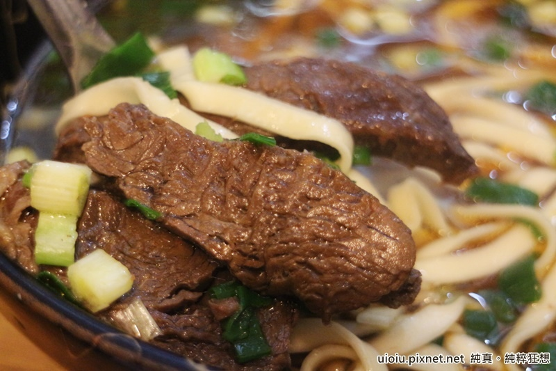肉有三大塊，但肉的品質也很不穩定，有時候很嫩，有時候很老~
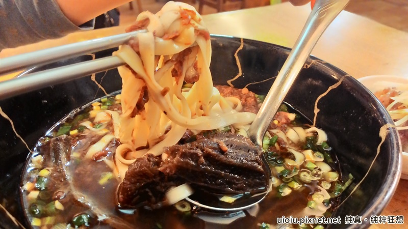麵也是有時候會吸收湯汁有入味，有時候有咬勁，有時候又煮太久有點軟 也要看運氣~
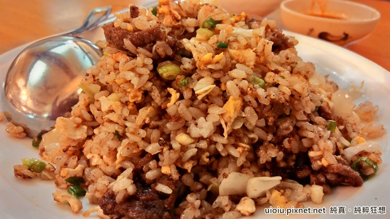我得說炒飯真的很普通，就一般的炒飯，所以賣125元我真心不能理解，點過一次就不會再點了~
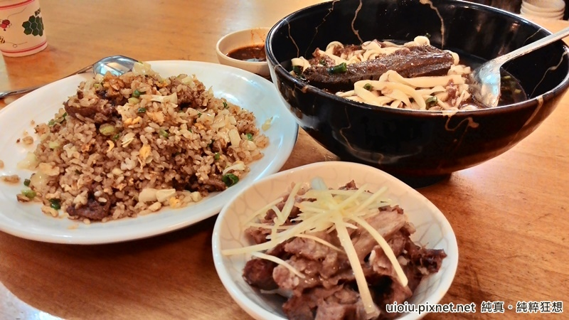以前我們都會點二個飯麵類，一人吃一碗~ 後來發現還是豆花好吃後... 就變成湊低消(一人70元)， 點一碗大碗的蒜味牛肉麵(130元)+油豆腐(35元)...
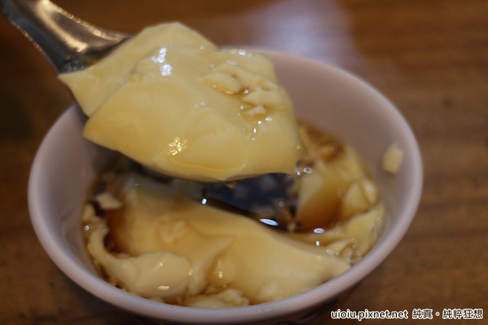就開始了豆花吃到飽之旅.. 有聽說新豐的牛肉麵比較好吃，但這家離我們最近呀~~ 而且我們是為了豆花而來，牛肉麵就..不那麼重要了(遮臉) 反正純粹為了豆花，我們還是會繼續湊低消吃豆花..XD
引自:http://uioiu.pixnet.net/blog/post/30913579-%E3%80%90%E6%96%B0%E7%AB%B9%E3%80%82%E7%AB%B9%E5%8C%97%E3%80%91%E8%80%81%E7%89%9B%E7%9A%AE%E7%89%9B%E8%82%89%E9%BA%B5-%E8%B1%86%E8%8A%B1%E8%B1%86%E6%BC%BF%E5%90%83%E5%88%B0%203.%20%E5%BD%AD%E8%A8%98%E9%BA%B5%E9%A3%9F%E9%A4%A8